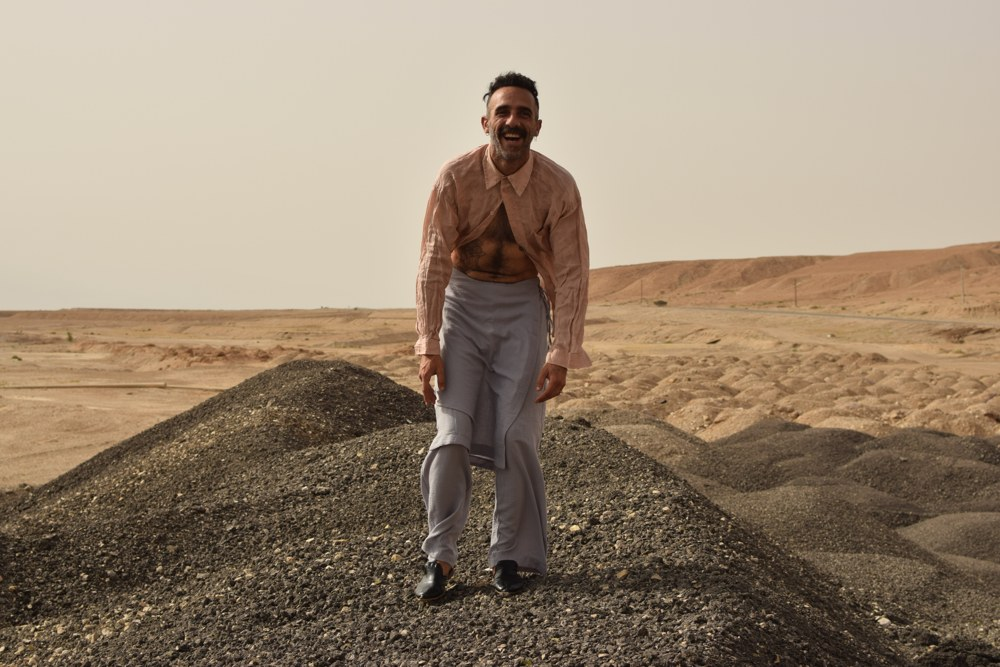
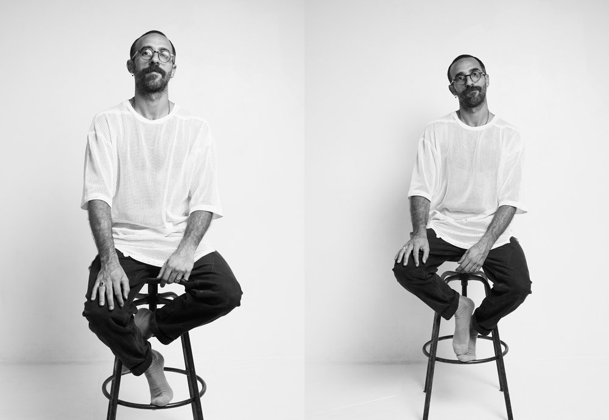
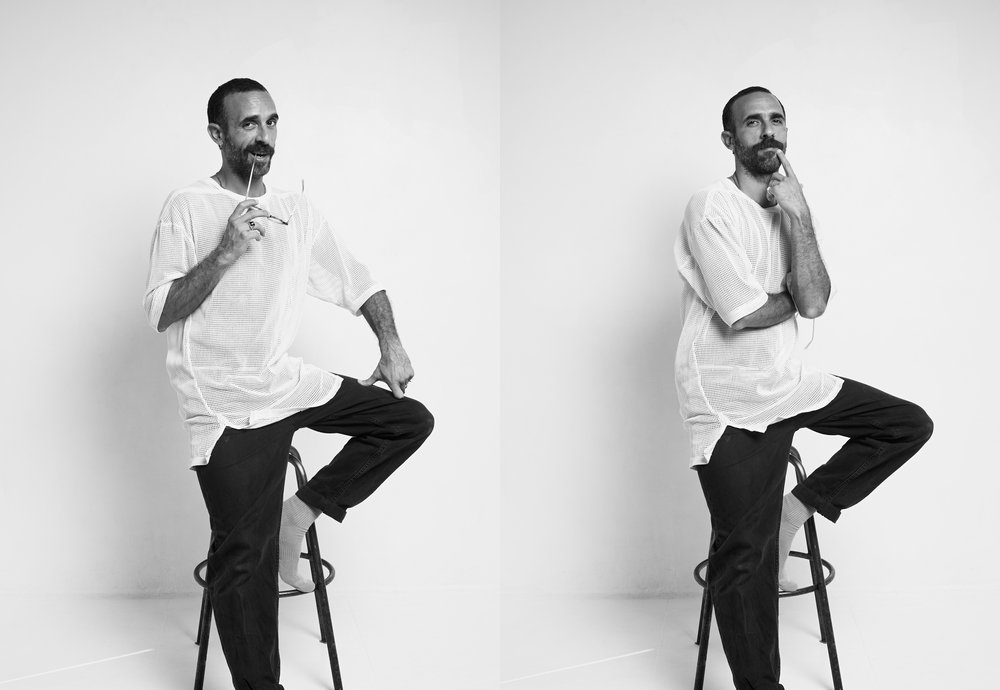
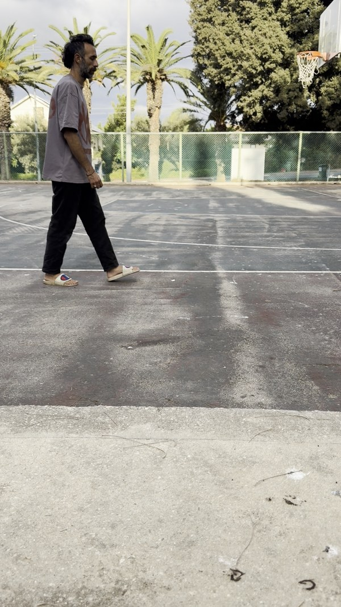

No black and white. Higgsfield already holds you as a trained identity. Four taps and a note, then copy.
What already exists
The identity is Higgsfield Soul ID bb-era4-now (Joseph Now), trained on 37 real frames from your studio and desert shoots. It is listed as ready. The live list could not be re-read today because the Higgsfield connector needs you to sign in again.
Heads up: the studio training frames below are black and white, only because that is how they were shot. The generated character is colour: colour comes from the prompt and from the desert frame. Your walk video is only the motion reference.

Real colour frame from the desert shoot, one of your colour likeness sources (here in black shoes; the bible look is barefoot)

Studio shoot, Look 05: mesh tee, black trousers, round wire glasses (many frames)

Studio shoot, Look 05: same look, no glasses (other frames)
The walk reference
Your own colour take. It drives how the character walks and never appears as you.

Mid-stride frame from your colour walk take (motion reference only)
What does the walking character wear?
Round wire glasses?
Where does the character get made and animated?
Next step
Your notes
Paste the copied verdict into the chat. Nothing is sent from this page and no credits are spent by it.